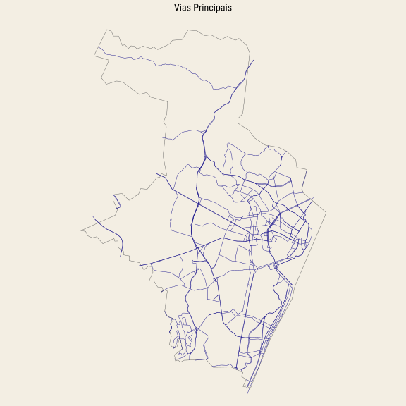
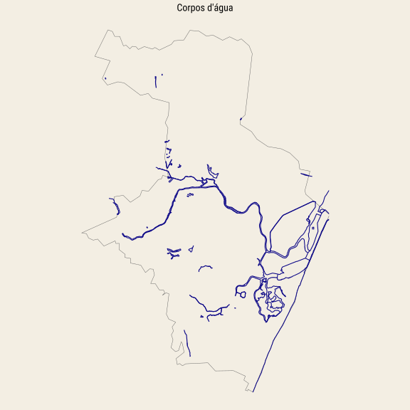
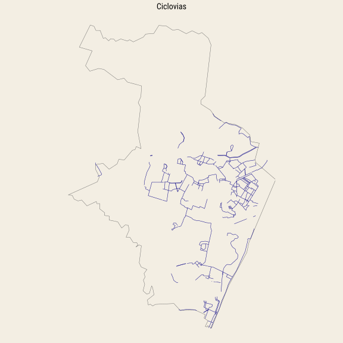
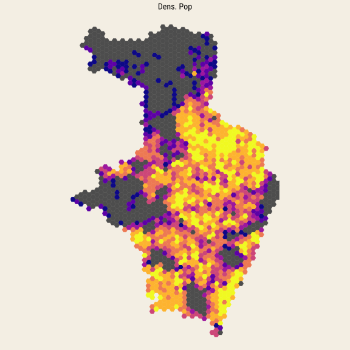
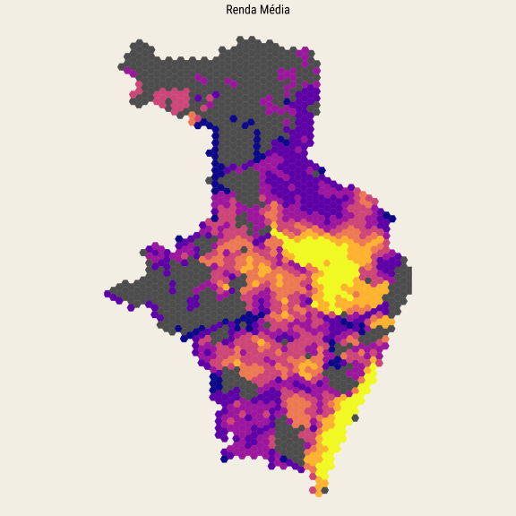
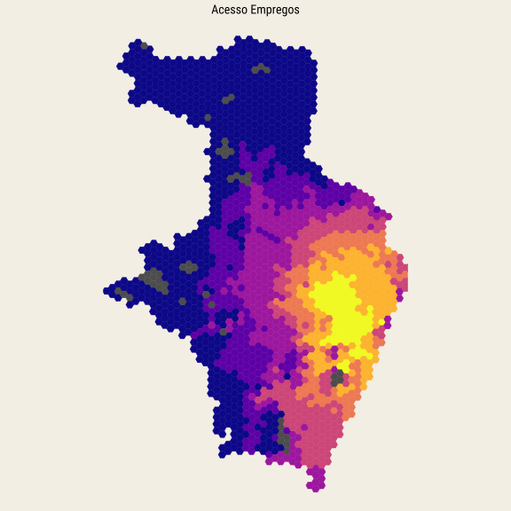
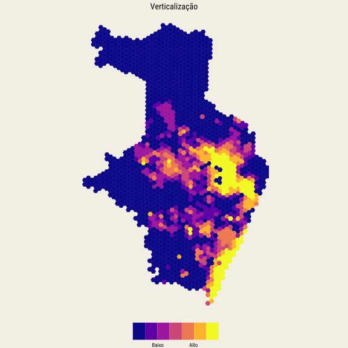
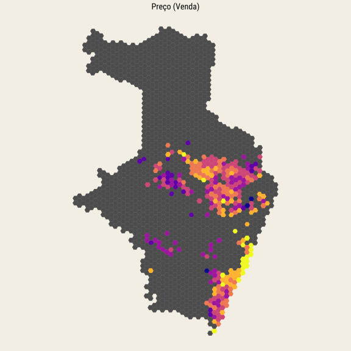

Recife
Semana que vem vou estar no Recife a trabalho e para conhecer um pouco da cidade resolvi tirar um tempo para fazer alguns mapas da cidade.

Detalhes do mapa
Os dados dos dois primeiros mapas, das principais vias e dos corpos d’água, são do OpenStreetMap. Pode-se ver, por exemplo, a Rodovia Mario Covas, que corta a cidade de norte a sul e o famoso Rio Capibaribe que atravessa a cidade.
Para o terceiro mapa puxei os dados do Ciclomapa. Apesar do título, eu incluí tanto ciclovias, ciclofaixas e ciclorrotas.
Os mapas da segunda linha foram todos feitos com dados do projeto de Acesso a Oportunidades do IPEA. Os dados de população e renda são do Censo de 2010 e espacialmente interpolados com os hexágonos H3, da Uber. Para facilitar a visualização usei o algoritmo de Jenks para agrupar os dados em 7 grupos. Além disso, usei uma transformação log tanto na renda como na população para reduzir um pouco da variância nos dados.
A renda da cidade é visivelmente concentrada na região sul-sudeste, próxima do litoral e na região centro-leste, no que me parece ser a região dos bairros Madalena e Boa Vista. Já a densidade populacional não segue um padrão simples; a população está espalhada por toda a cidade.
Como medida de acesso a empregos usei o percentual de oportunidades de emprego acessíveis a 15 minutos de carro em horário de pico. Segundo os dados do Censo, a maior parte dos deslocamentos casa-trabalho na RM de Recife são de menos de uma hora (83,4%). Assim, 15 minutos de carro (em horário de pico) me parece ser um “luxo” que as pessoas estão dispostas a pagar e que deve se refletir, em algum nível, no preço dos imóveis.
O mapa sugere que Recife é uma cidade monocêntrica, com a maior parte dos empregos concentrada na região central. Interessante notar que, apesar da distância geográfica, a região sul, de Boa Viagem, Pina, etc. continua com indicadores de acessibilidade relativamente altos.
Para tentar mensurar a verticalização calculei a proporção de apartamentos em relação ao total de domicílios em cada região. Novamente os dados vem do Censo e são agrupados a nível de setor censitário. Eu faço uma interpolação espacial simples com os hexágonos H3, na mesma resolução 9 do projeto do IPEA, para manter o padrão. Grosso modo, parece que as regiões de rendas mais altas coincidem com as regiões mais verticalizadas.
Por fim, os dados de anúncios e preço provém de anúncios online de venda de imóveis ativos entre janeiro e junho de 2023. Por simplicidade, eu escolhi trabalhar apenas com anúncios de apartamentos e removi algumas observações discrepantes para conseguir um valor médio mais razoável. O preço médio observado na cidade neste período foi de R$7.900, com a maior parte das observações caindo dentro do intervalo R$3.800-R$12.700.
Mapas







